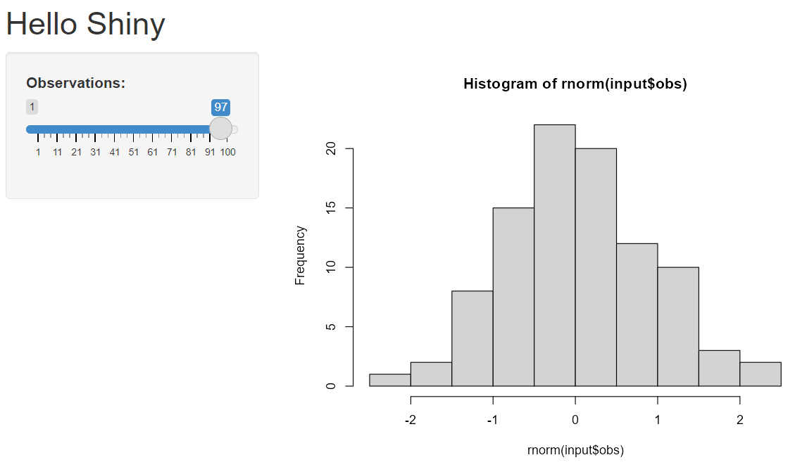
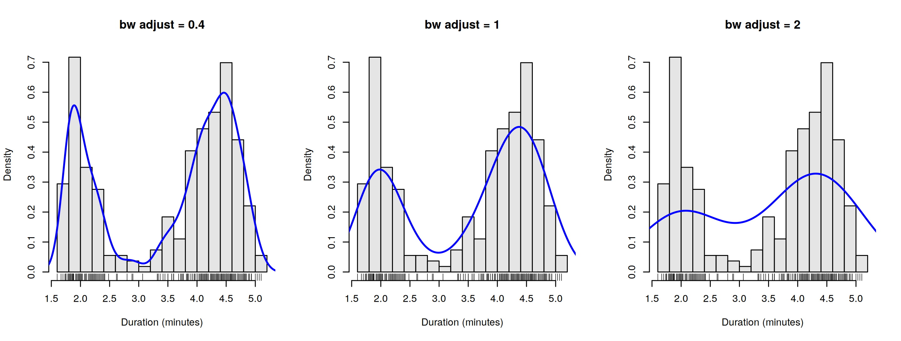
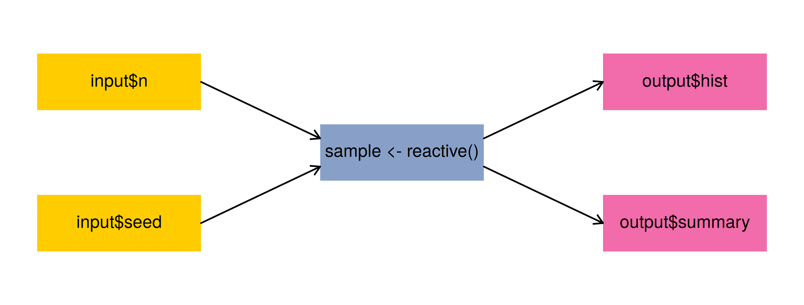
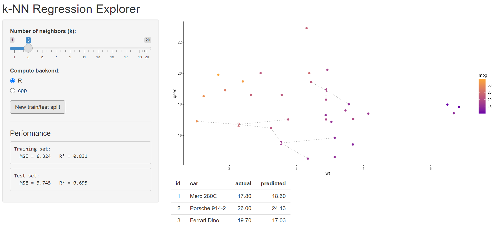
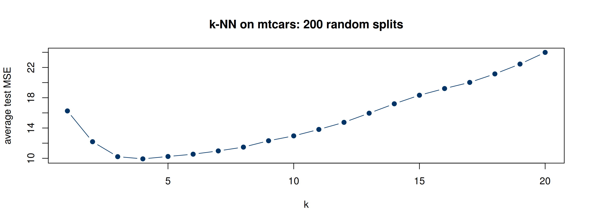
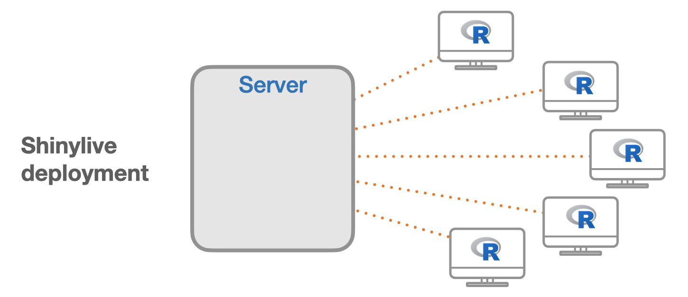

par(mfrow = c(1, 3))
for (adj in c(0.4, 1, 2)) {
hist(faithful$eruptions, probability = TRUE, breaks = 20, col = "gray90",
main = paste("bw adjust =", adj), xlab = "Duration (minutes)")
rug(faithful$eruptions)
lines(density(faithful$eruptions, adjust = adj), col = "blue", lwd = 2)
}Interactive Shiny Apps ✨
MATH 4750 / MSSC 5750 Computational Statistics
Dr. Mehdi Maadooliat
Marquette University
MATH 4750 - Spring 2027
Developing Interactive Shiny Apps
Why Shiny? Structure of an app
Inputs, outputs, and layouts
Reactivity: reactive(), eventReactive(), observe()
Case study: a k-NN regression explorer
Deploying and sharing apps
What Is Shiny?
- An R package for building interactive web applications directly from R; no HTML/CSS/JavaScript required.
- Turns an analysis into a tool others can use: explore a model, tune a parameter, teach a concept.
- Used throughout this course: the Regression app, the EM app (Ch 14), the FPCA app.
Which plots from Chapters 3-6 would you like to “play with”? (Number of bins, bandwidth, sample size, the constant \(c\) in acceptance-rejection, …)
Structure of a Shiny App
UI (user interface)
- Layout and appearance
- Inputs: sliders, text boxes, buttons
- Outputs: placeholders for plots, tables, text
Server
- Performs the computations
- Responds to user inputs and updates outputs
- Communicates with the UI through
input$...andoutput$...
Hello Shiny
library(shiny)
ui <- fluidPage(
titlePanel("Hello Shiny"),
sidebarLayout(
sidebarPanel(
sliderInput("obs", "Observations:",
min = 1, max = 100, value = 50)
),
mainPanel(plotOutput("distPlot"))
)
)
server <- function(input, output) {
output$distPlot <- renderPlot({
hist(rnorm(input$obs))
})
}
shinyApp(ui, server)
Inputs and Outputs
Inputs (inputId, label, …)
sliderInput(),numericInput()selectInput(),radioButtons(),checkboxInput()textInput(),dateInput(),fileInput()actionButton()- Read in the server as
input$inputId
Output / render pairs
| UI | Server |
|---|---|
plotOutput() |
renderPlot() |
tableOutput() |
renderTable() |
textOutput() |
renderText() |
verbatimTextOutput() |
renderPrint() |
uiOutput() |
renderUI() |
Assign to output$id with a render*() function; the id must match the one in *Output("id").
Our 2025 Example: Old Faithful Explorer
ui <- bootstrapPage(
selectInput(inputId = "n_breaks", label = "Number of bins in histogram (approximate):",
choices = c(10, 20, 35, 50), selected = 20),
checkboxInput(inputId = "individual_obs", label = strong("Show individual observations"), value = FALSE),
checkboxInput(inputId = "density", label = strong("Show density estimate"), value = FALSE),
plotOutput(outputId = "main_plot", height = "300px"),
conditionalPanel(condition = "input.density == true", # JavaScript condition!
sliderInput(inputId = "bw_adjust", label = "Bandwidth adjustment:",
min = 0.2, max = 2, value = 1, step = 0.2))
)
server <- function(input, output) {
output$main_plot <- renderPlot({
hist(faithful$eruptions, probability = TRUE, breaks = as.numeric(input$n_breaks),
xlab = "Duration (minutes)", main = "Geyser eruption duration")
if (input$individual_obs) rug(faithful$eruptions)
if (input$density) lines(density(faithful$eruptions, adjust = input$bw_adjust), col = "blue")
})
}shiny::runApp("slides/apps/geyser"). This previews kernel density estimation (Chapter 12).
What the App Computes, Without Shiny

Develop and test the computations as ordinary R functions first; then wrap them in a Shiny app.
Layouts
Reactivity
Reactive Programming
- Shiny keeps track of dependencies: an output that reads
input$kis re-executed wheneverinput$kchanges. - Code in
render*()is lazy: it runs only when needed, and only the parts that depend on changed inputs.
What would go wrong if each output called rnorm(input$n) itself?
reactive(), eventReactive(), observe()
| Function | Returns a value? | Runs when … | Typical use |
|---|---|---|---|
reactive() |
yes | any input it reads changes | shared intermediate results |
eventReactive(event, ...) |
yes | only when event fires (e.g. a button) |
expensive computations, resampling |
observe() |
no (side effects) | any input it reads changes | logging, updating inputs |
observeEvent(event, ...) |
no | only when event fires |
reset buttons, saving files |
isolate() |
– | never triggers | read an input without a dependency |
Reactive Graph for a Simulation App

Inputs (sources) \(\rightarrow\) reactive expressions (conductors) \(\rightarrow\) outputs (endpoints).
Case Study: k-NN Regression Explorer
The Goal

Predict mpg from wt and qsec in mtcars with k-NN regression (deck 03); let the user choose \(k\) and resample the train/test split.
Step 1: Write and Test the Computations
knn_pred <- function(train_x, train_y, test_x, k) {
train_x <- scale(as.matrix(train_x))
test_x <- scale(as.matrix(test_x), center = attr(train_x, "scaled:center"),
scale = attr(train_x, "scaled:scale"))
m <- nrow(test_x); preds <- numeric(m); ids <- integer(m * k)
for (j in seq_len(m)) {
d <- colSums((t(train_x) - test_x[j, ])^2)
idx <- order(d)[seq_len(k)]
preds[j] <- mean(train_y[idx]); ids[((j - 1) * k + 1):(j * k)] <- idx
}
list(preds = preds, ids = ids)
}
make_split <- function(data, prop = 0.7) {
idx <- sample(nrow(data), size = floor(prop * nrow(data)))
list(train = data[idx, ], test = data[-idx, ])
}
set.seed(4750); sp <- make_split(mtcars, 0.8)
p <- knn_pred(sp$train[, c("wt", "qsec")], sp$train$mpg, sp$test[, c("wt", "qsec")], k = 5)
data.frame(car = rownames(sp$test), actual = sp$test$mpg, predicted = round(p$preds, 1)) car actual predicted
1 Merc 450SLC 15.2 17.9
2 Honda Civic 30.4 29.4
3 AMC Javelin 15.2 18.3
4 Pontiac Firebird 19.2 16.4
5 Ferrari Dino 19.7 19.6
6 Maserati Bora 15.0 15.5
7 Volvo 142E 21.4 22.7Test Error as a Function of \(k\) (the App’s Story)
set.seed(4750)
ks <- 1:20
err <- replicate(200, {
sp <- make_split(mtcars, 0.8)
sapply(ks, function(k) mean((sp$test$mpg - knn_pred(sp$train[, c("wt", "qsec")], sp$train$mpg,
sp$test[, c("wt", "qsec")], k)$preds)^2))
})
plot(ks, rowMeans(err), type = "b", pch = 19, col = "#003366", xlab = "k", ylab = "average test MSE",
main = "k-NN on mtcars: 200 random splits")
Step 2: The UI
ui <- fluidPage(
titlePanel("k-NN Regression Explorer"),
sidebarLayout(
sidebarPanel(
sliderInput("k", "Number of neighbors (k):",
min = 1, max = 20, value = 5, step = 1),
actionButton("resample", "New train/test split"),
hr(),
h4("Performance"),
verbatimTextOutput("trainPerf"),
verbatimTextOutput("testPerf")
),
mainPanel(plotOutput("predPlot", height = "400px"),
tableOutput("predTable"))
)
)Step 3: The Server
server <- function(input, output, session) {
split <- eventReactive(input$resample, make_split(mtcars, prop = 0.8), ignoreNULL = FALSE)
vars <- c("wt", "qsec")
predicted <- reactive({
knn_pred(split()$train[, vars], split()$train$mpg,
split()$test[, vars], input$k)
})
mse <- function(obs, pred) mean((obs - pred)^2)
output$testPerf <- renderPrint(cat("Test MSE =",
round(mse(split()$test$mpg, predicted()$preds), 3)))
output$predTable <- renderTable(data.frame(
car = rownames(split()$test), actual = split()$test$mpg,
predicted = round(predicted()$preds, 2)))
output$predPlot <- renderPlot({ ... ggplot of neighbors ... })
}eventReactive(input$resample, ...)re-splits only when the button is pressed;ignoreNULL = FALSEmakes it run at start-up.- Full app:
slides/apps/knn-explorer/app.R.
Debugging Shiny Apps
- Test functions outside Shiny first (as we did).
print()/message()inside the server writes to the R console.browser()inside a reactive pauses execution there.req(input$x)stops quietly until an input is available.validate(need(nrow(d) > 0, "No data"))shows friendly error messages.options(shiny.reactlog = TRUE)thenreactlog::reactlog_show()visualizes the reactive graph.
Deploying and Sharing
Ways to Share an App
Traditional (server-based)
- shinyapps.io:
rsconnect::deployApp("path") - Posit Connect / Shiny Server (e.g. our department server
dna.mscsnet.mu.edu:3838) - Share the folder or a GitHub repo:
shiny::runGitHub("repo", "user", subdir = )
Serverless: Shinylive
- The app runs in the browser via WebAssembly (webR)
shinylive::export("myapp", "site"), or a{shinylive-r}chunk in Quarto (extensionquarto-ext/shinylive)- Great for teaching; limited to packages compiled for webR

Python Supplement: Shiny for Python
from shiny import App, ui, render
import numpy as np, matplotlib.pyplot as plt
app_ui = ui.page_sidebar(
ui.sidebar(ui.input_slider("n", "Observations", 1, 100, 50)),
ui.output_plot("hist"),
)
def server(input, output, session):
@render.plot
def hist():
plt.hist(np.random.default_rng().normal(size=input.n()))
app = App(app_ui, server)Same concepts: UI + server, inputs/outputs, reactivity.
Summary
- A Shiny app =
ui+server+shinyApp(). - Inputs are read as
input$id; outputs are assigned asoutput$id <- render*(). - Reactive expressions cache shared results;
eventReactive()waits for a trigger. - Write and test computations as plain functions first.
- Share with shinyapps.io, a Shiny server, or Shinylive.
Build an app for acceptance-rejection (Ch 3): the user picks a Beta(\(a\), \(b\)) target and the constant \(c\); display the accepted/rejected points under \(c\,g(x)\) and the acceptance rate.